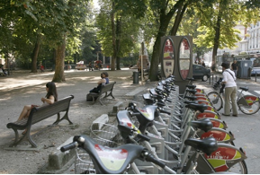
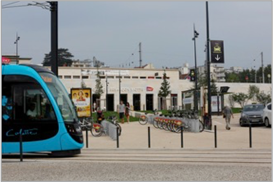

Les émissions de gaz à effet de serre dues aux activités humaines entraînent un réchauffement de la planète et des modifications importantes du climat. Il est encore temps d’agir pour limiter le réchauffement climatique à moins de 2 °C et atteindre les objectifs de l’accord de Paris à la COP21.
Les collectivités locales sont des acteurs essentiels de la lutte contre le changement climatique. Dans les décisions d’équipement qu’elles prennent (aménagement, urbanisme, transport…), au titre du patrimoine qu’elles gèrent (bâtiments, éclairages publics…) et du fait des activités pour lesquelles elles assurent une compétence de gestion (transports, déchets, chauffages urbains…), les collectivités contribuent à émettre plus de 12 % des émissions nationales de gaz à effet de serre (GES), soit une soixantaine de millions de tonnes éq.CO2 par an (1).
En incitant les collectivités à mener des actions entre autres dans les axes de la planification territoriale, de l’approvisionnement en énergie, de la mobilité et de la coopération, le programme Territoire Engagé Transition Écologique leur permet d’agir pour limiter l’impact climatique de leur territoire et accroître sa résilience dans le long terme, en cohérence avec leur stratégie et leur Plan Climat Air Énergie Territorial. L’obtention du label est aussi un moyen de valoriser leur engagement et leur progression.
Par exemple, les villes de Grenoble et de Besançon, ainsi que la Métropole de Nantes, ont toutes les trois mesuré une réduction des émissions de Gaz à Effet de Serre (GES) de leur territoire, ramenées au nombre d’habitants, comme le montrent les résultats présentés lors des renouvellements de leur label Territoire Engagé Climat-Air-Énergie.
1. -20 % en 3 ans pour la Ville de Grenoble
Entre 2013 et 2016, les émissions annuelles de Gaz à Effet de Serre du territoire de la Ville de Grenoble, actuellement labellisée 5 étoiles Territoire Engagé Climat-Air-Énergie, sont passées de 3,4 à 2,7 tCO2eq/habitant, soit une amélioration de 20 %.
Pour produire ces données, Grenoble s’est appuyé sur les données produites par l’Agence Locale de l’Énergie et du Climat (ALEC), qui reprend des informations de l’observatoire Atmo Auvergne-Rhône-Alpes.
Parmi les actions qui ont permis de parvenir à cette évolution à l’échelle du territoire, la Ville de Grenoble est notamment impliquée dans les actions suivantes :
- La Ville de Grenoble s’est engagée dès 2005 dans un Plan Climat Local qu’elle a su enrichir et renforcer aux fils des ans (schéma énergétique de la Ville de Grenoble, programme « Grenoble Facteur 4 », Charte d’engagement du Plan Climat), pour en faire aujourd’hui une politique totalement intégrée dans son organisation et ses projets.
- Grenoble s’appuie sur des référentiels nationaux (éco quartier, éco cité…) qu’elle adapte et enrichit pour chacun de ses projets, dans une logique d’aller toujours plus loin. Aussi, la Ville décline ces référentiels dans des cahiers de prescriptions environnementales aux constructeurs élaborés pour chaque opération décrivant les ambitions environnementales attendues : le CCTP est élaboré par les SEM, et positionnent des objectifs environnementaux et énergétiques toujours très ambitieux. Pour la ZAC Flauberg, l’élaboration du tableau des prescriptions est le résultat du travail réalisé avec les élus de la Ville de Grenoble et avec l’aménageur SAGES dans la définition des enjeux environnementaux de cette opération d’envergure et dans la déclinaison des objectifs de performance qui en découlent. Son objectif est de définir un ensemble d’ambitions, relatives à 8 thématiques, auxquelles les opérations de construction sont amenées à répondre, selon le cas, de façon obligatoire (socle prescriptif) ou incitative.
- Grenoble est représentée dans les instances de décision de Gaz et Électricité de Grenoble (GEG) et la Compagnie de Chauffage Intercommunale de l’Agglomération Grenobloise (CCIAG), qui ont toutes deux officiellement affiché leur objectif global de développement des énergies renouvelables dans leur mix énergétique, contribuant ainsi concrètement aux objectifs du Plan Climat Air Énergie métropolitain et grenoblois :
- La CCIAG se fixe ainsi l’objectif d’atteindre 100 % d’énergie renouvelable dans le chauffage urbain à 2034.
- Les filiales de GEG, quant à elles, se fixent l’objectif de produire l’équivalent de 100 % de la consommation électrique des Grenoblois en énergies renouvelables d’ici 2022.
- Un Plan École avec un programme de travaux a été déployé sur les 3 groupes scolaires, qui vise l’atteinte d’un niveau BBC rénovation. Il est équivalent sur l’ensemble à une réduction globale de 46 % des consommations d’énergie primaire.
Un budget participatif, la Ruche aux projets, qui permet aux citoyens de proposer des idées ou des projets qui répondent à leurs besoins, d’impliquer les Grenoblois dans le choix des priorités des dépenses d’investissement, en leur permettant de décider directement quels projets seront réalisés, et de favoriser une implication citoyenne et collective de toutes et tous. Le budget annuel est de 800 000 € pour la dizaine de projets retenus.

Parole de Vincent FRISTOT, adjoint au Maire chargé de la Transition énergétique.
« La Ville de Grenoble est clairement engagée dans la transition énergétique. Avec une culture transversale des enjeux, elle adopte des objectifs ambitieux pour la santé, l’air, l’énergie et le climat.
Pour aller plus loin, elle mobilise aujourd’hui les acteurs du territoire et montre que des choix nouveaux sont possibles pour réaliser des aménagements à faible empreinte, préserver la biodiversité, permettre des mobilités propres et offrir une alimentation biologique et locale. »
En savoir plus :
- https://territoireengagetransitionecologique.ademe.fr/collectivites/grenoble/
- https://territoireengagetransitionecologique.ademe.fr/la-ville-de-grenoble-labellisee-citergie-gold/
- Fiche Action Exemplaire “6.5.1 Budget participatif” : https://www.territoires-climat.ademe.fr/Uploads/media/default/0001/01/7b905e489304880a688ab4f41e6523437766b53f.pdf
2. -16 % en 4 ans pour la Ville de Besançon
Entre 2012 et 2016, les émissions annuelles de Gaz à Effet de Serre du territoire de la Ville de Besançon, actuellement labellisée 5 étoiles Territoire Engagé Climat-Air-Énergie, sont passées de 5 à 4,2 tCO2eq/habitant, soit une amélioration de 16 %.
Pour produire ces données, Besançon a repris les valeurs indiquées par la plateforme internet OPTEER (Observation et Prospective Territoriale Énergétique à l’Échelle Régionale), portée par Atmo Bourgogne-Franche-Comté.
Pour cela, la Ville de Besançon a notamment participé aux actions suivantes :
- Mise en place de commissions transversales pour les projets d’aménagement. Depuis 2020 la coordination des délégations est assurée dans trois instances pilotées par le service Urbanisme, pour une centaine de Permis de Construire instruits par an : une commission Permis de Construire, une commission Permis d’Aménager et une plateforme « espaces publics » où les services gestionnaires déposent leurs projets au stade du programme pour s’assurer de la coordination technique et de la validation de la commande politique pour toutes les interventions sur l’espace public.
- Les énergies renouvelables et de récupération sont utilisées à 81 % dans les réseaux de chaleur présents sur le territoire. Le contrat de DSP du chauffage urbain comporte une « Option Maîtrise de l’Énergie », proposée à tous les abonnés : une moyenne de consommation de chaleur est réalisée et sert de base. Lorsque l’abonné a diminué sa consommation de 5 % par rapport à sa consommation de base, il bénéficie d’une prime et à l’inverse, si sa consommation est plus élevée, il est pénalisé. Les premiers 34 abonnés ont diminué leurs consommations d’énergie de 11 % en moyenne.
La mise en place du vélopartage en centre-ville, Vélocité, a permis d’augmenter l’usage du vélo sur cette zone. Par ailleurs et sur l’ensemble du territoire, les voies cyclables et voies réservées augmentent. Le service de transport public (Ginko) a mis en place « Ginko vélo », avec 70 % de cette offre sur le territoire de la Ville de Besançon : la flotte offre 670 VAE en location.
L’abonnement à ce service vélo est offert aux abonnés du transport en commun.

- Depuis mars 2010, CITIZ (anciennement SCIC Autocité) propose aux habitants un service d’auto-partage. Les personnels de la Ville de Besançon et de la Communauté d’Agglomération du Grand Besançon peuvent également utiliser ce service (une dizaine de véhicules sur 8 stations) pour leurs déplacements professionnels. Pour le montage de l’opération, 30 % du temps d’un ingénieur et un stagiaire de niveau bac+5 ont été requis pendant 5 mois. En 2014 le service propose 13 stations et compte 350 abonnés. En savoir plus : https://bfc.citiz.coop
- Pôle d’échanges multimodal. Grâce à un investissement de 15,5 millions d’euros (dont 7,1 millions investis par la Ville), Besançon a requalifié de 2012 à 2014 le quartier de la gare de Viotte. La mobilité a été développée à l’échelle de la Ville, de l’Agglomération et de la Région, et inclut l’accessibilité pour les personnes à mobilité réduite. Tous les moyens de transports sont accueillis : TER (32/jour) et TGV, piétons, vélo (parking sécurisé, arceaux couverts (environ 60) et non couverts au nord et au sud de la gare), bus, tramway, autopartage et taxis. De plus, ce quartier est à partir de 2017 aménagé en Eco-quartier multifonctionnel (logements et activités, dont un pôle tertiaire administratif).

- Besançon est engagée dans une démarche de lutte contre la précarité énergétique, le SLIME (Service Local d’Intervention pour la Maîtrise de l’Energie), ensuite étendu à l’échelle du Grand Besançon et à une communauté de communes limitrophe. Un chargé de mission de la Ville se rend au domicile du ménage qui a des impayés énergétiques pour l’aider à mieux comprendre ses factures d’eau et d’énergie, analyser le niveau d’isolation du logement, le conseiller sur des écogestes et enfin lui distribuer du petit matériel. Chaque année plus de 120 ménages sont rencontrés. L’économie pour le ménage est en moyenne de 100 €.
Parole de Annaïck CHAUVET, Adjointe à la transition énergétique, aux bâtiments et aux moyens techniques de la Ville
« Notre volonté et celle de la politique que nous mettons en place c’est de nous adapter, de répondre au mieux aux changements climatiques tout en limitant notre impact sur l’environnement et de permettre aux habitants de notre ville et territoire de continuer à y vivre confortablement.
Nous avons la volonté et la possibilité de faire émerger de nouvelles actions sur les prochaines années au travers du programme Territoire Engagé Climat-Air-Énergie (ex-Cit’ergie). Nous avons des objectifs en matière de diminution de consommations d’énergie ou d’émissions de gaz à effet de serre et en matière de production d’énergie renouvelables, mais notre objectif final est bien de devenir un territoire à énergie positive et nous savons que pour continuer à évoluer dans ce sens il nous faudra travailler avec notre territoire, les institutions partenaires, fédérer les acteurs locaux, les entreprises, les associations, les habitants de la ville et de notre territoire et certainement nous organiser au travers de sociétés de projets et créer une agence locale de l’énergie et du climat. »
En savoir plus : https://territoireengagetransitionecologique.ademe.fr/collectivites/besancon/
3. -23 % en 6 ans pour la Métropole de Nantes
Entre 2010 et 2016, les émissions de Gaz à Effet de Serre du territoire de la Métropole de Nantes, actuellement labellisée 5 étoiles Territoire Engagé Climat-Air-Énergie, sont passées de 5,3 à 4,1 tCO2eq/habitant, soit une amélioration de 23 %.
Ces données sont basées sur l’inventaire BASEMIS®, utilisé par l’Observatoire régional Air Pays de la Loire pour établir le bilan tous les 2 ans et renseigner les fiches territoire.
Pour cela, la Métropole de Nantes a notamment porté les actions suivantes :
- Le Grand Débat sur la transition énergétique conduit en 2016 et 2017 a constitué une concertation très forte du territoire (200 jours de débat, 53 000 participants) et a permis d’élaborer la feuille de route pour la transition énergétique adoptée en conseil métropolitain en 2018. La stratégie du Plan climat air énergie territorial est déclinée de manière opérationnelle dans le schéma directeur des énergies élaboré avec l’AURAN (agence d’urbanisme) et adopté en avril 2021.
- La politique publique des réseaux de chaleur de la métropole consiste à piloter les projets structurants de réseaux de chaleur via des délégations de service public. En 2020, Nantes Métropole a lancé une étude pour se doter d’un schéma directeur pour l’ensemble des 7 réseaux de chaleur de son territoire et pour les projets de création de nouveaux réseaux de chaleur sur les communes. 110 km de réseau de chaleur sont réalisés, alimentés par 63 % d’énergies renouvelables et récupérables. 30 000 logements sont raccordés, ce qui représente d’ores et déjà 45% des logements sociaux de la Ville de Nantes.
- Au niveau de la mobilité, la qualité et la variété de l’offre de transport collectif sont attestées par de très bons ratios : 230 voyages/hab par an et 15 % de part modale pour le transport en commun (et même 18 % pour l’intra-périphérique). L’efficacité des transports collectifs est recherchée :
- les points de saturation du réseau ont été identifiés : l’arrivée du e-busway (24m au lieu de 18m) et des nouveaux tramways (300 places au lieu de 200 places) vont améliorer la situation,
- aux carrefours routiers, la priorité est donnée aux tramways et aux chronobus,
- les arrêts les plus fréquentés et le tramway sont équipés d’un système d’information en temps réel.

- Création d’un dispositif de soutien et d’animation à l’écoresponsabilité dans la filière événementielle. Les événements sont un vecteur important de la transition écologique car ils sont des vitrines de changements de notre société. Depuis 2018, Nantes Métropole vise l’organisation de 1001 événements écoresponsables sur le territoire et propose aux organisateurs des accompagnements et une charte précisant les objectifs et les ressources mobilisables sur le territoire de la Métropole avec l’ensemble des partenaires de la filière (metropole.nantes.fr/guideecoevenement). Une quarantaine d’événements exemplaires et six équipements en régie accueillant des événements sont visés chaque année. Les formations proposées dans ce dispositif doivent permettre d’accompagner plus de 500 personnes par an sur le territoire.

- Les enfants du territoire ont accès à des activités pédagogiques autour de 6 entrées thématiques : biodiversité, déchets, mobilité, eau, énergie et alimentation. Les animations pédagogiques sont réalisées par le réseau associatif de l’environnement : Ecopole et 17 associations partenaires. En 2019/2020, 700 animations ont été programmées, touchant 306 classes et 6 770 élèves.
- La collectivité développe également des actions récurrentes de communication sur la transition écologique, dont une campagne annuelle pour faire participer les habitants à différents défis (zéro déchet, zéro énergie, alimentation, etc.), dans lesquels 1 630 foyers ont été impliqués depuis 2011.
Parole de Julie LAERNOES, maire-adjointe de Nantes et vice-présidente de Nantes Métropole jusqu’en 2022
« Territoire Engagé Climat-Air-Énergie (ex-Cit’ergie) est un outil très structurant, très apprécié des services et des élu.es : la démarche nous permet à la fois de reconnaître le chemin parcouru et de pointer collectivement nos marges de manœuvre pour accélérer les transitions. »
En savoir plus : https://territoireengagetransitionecologique.ademe.fr/collectivites/nantes-metropole/